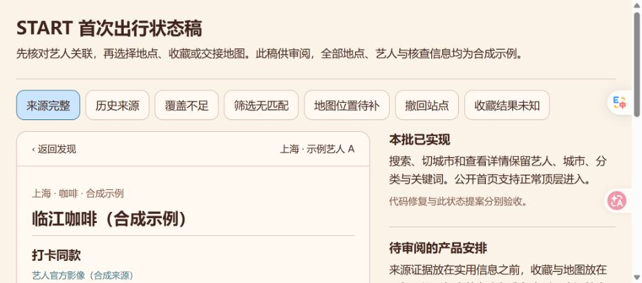

场景与问题
看到了喜欢的场景，下一步该查什么
一篇访谈、一张照片或一个电影镜头，都可能成为出发的理由。做出决定前，用户还要确认地点与艺人或作品的关系、地址是否对应、当前能否进入，以及多个地点是否适合一起安排。信息分散在内容平台、地图和经营者公告中，核对与整理的成本由用户承担。
这个问题来自项目材料与内容核查。用户是否普遍愿意为这组服务切换工具，仍需观察具体出行任务。本轮核对9组线索，保留2个地图候选，达到近期发布条件的地点为0。
地图能搜到，出行依据还要继续核实
核查成都作品主题线索时，一个地点有历史关联，却因馆方闭馆公告而被排除出近期候选。另两处地点仍缺当前营业、入口和具体机位资料。产品因此把关联证据、地图匹配与当前可访问条件分别维护。内容进入目录之前，要能说明每项判断来自哪里。
核心路径与功能解释
先看懂关联，再作出选择
从艺人或作品进入，沿城市和类别缩小范围。地点说明回答“为什么与这个主题有关”，来源支持用户回看依据。确定合适地点后，再交接地图或组织路线。私人收藏和Book承接个人记录，公共目录承担可核查的内容供给。
来源标题、类别和链接已接入后台保存、投稿审核及公开读取合同，各艺人关联保留独立贡献。筛选进入详情再返回时继续保留搜索语境。当前营业、入口、路线交通和真机地图交接按下一轮任务继续验证。
AI帮助整理线索，编辑判断决定内容能否使用
候选提取适合降低转录负担。地点是否对应、资料能否支撑关联、当前条件是否满足出行，则需要来源核对与内容审阅。下一轮将同时记录提取速度、人工修改、弃用、核验时间与调用成本，判断AI实际减少了哪一部分工作。
一次使用的目标顺序
主题线索
艺人或作品与城市
核验关联
回到来源，确认关系
选择地点
地址与当前条件
交接地图
确认目的地后交给地图
任务关系示意，能力与验收范围见图注及当前阶段。

我的取舍与一次修复
来源变化时，旧依据应怎样处理
新增来源字段后，旧客户端和历史版本仍会继续存在。来源未变且旧客户端省略新字段时，保留已有资料；用户明确清空或换了来源时，按该次操作处理；恢复早期版本时，恢复对应版本的内容。这些规则进入保存、审核和读取回归，避免界面看似更新了地点，依据却仍指向另一份材料。
本轮定向18项、平台162项、云适配147项通过，重复安装和升级回退也经过隔离检查。测试说明对应环境中的工程行为，用户决策负担与实际到访需要另外观察。新表单和云部署继续待办。
查看七态界面设计提案

竞品分析概览
同一次主题出行，用户要完成哪些判断
统一任务是“为一次艺人或作品主题出行，选定有依据且可前往的地点，并安排下一步”。比较对象为Mapstr、Wanderlog和既有内容搜索与地图组合。下列为2026年11月11日官方资料研究与本项目记录，客户端步数、耗时、付费限制和地区可用性待同任务体验。
| 比较问题 | 现有方案的能力 | START要验证的价值 |
|---|---|---|
| 怎样收集地点 | Mapstr官方支持网页及社交分享地点导入，Wanderlog有指南加点与预订导入 | 经过核对的主题目录能否减少重复搜集与转录 |
| 怎样知道主题关系成立 | 用户可借助笔记、评论、链接保留理由，主题审核深度待客户端核对 | 独立关联贡献、可追溯来源和当前条件能否减少重复判断 |
| 怎样从选点到行程 | Wanderlog提供行程与地图组织，原有搜索/地图工作流也可完成安排 | 主题内容、地点条件和地图交接组合是否足够顺畅 |
| 内容失效后怎样处理 | 取决于工具内容机制和个人维护，具体过程待测 | 小范围目录、纠错与持续复核的维护成本是否可承担 |
Mapstr已经支持社交地点导入，Wanderlog已经组织行程与地图。START的差异化假设聚焦主题内容的核验与持续维护，再结合一次出行任务观察节省的判断成本。目录供给和用户切换意愿，将决定这组能力是否值得持续投入。
运营与评价
先建立能维护的内容，再观察使用
运营从小范围主题目录开始，记录候选、核对、审核、发布及纠错过程，每条内容都能回到来源。当前两处候选继续补营业、入口、机位与权利信息，合格密度不足时调整选样。内容合作与传播围绕已有可用内容组织。
供给侧记录合格数量、淘汰原因、核验与维护工时。用户侧观察具有近期出行意图、看到匹配内容的人，能否说明依据、选择地点并完成地图交接。实际到访单独记录用户自报来源。对照任务还会观察原有工具的完成过程、修改负担与总耗时。
职责、证据与后续
我负责需求与范围判断、内容和权限等业务规则，以及AI协作推进与结果审阅。资料检索整理、候选提取、代码生成和回归由AI辅助完成。案例通过核查记录、版本差异和具体修复展示判断过程。
当前可展示开发预览、真实界面局部、内容筛查反例及对应工程验收。下一阶段补充合格目录、统一入口、真机地图交接与自愿参与的任务观察，再根据用户修改和维护成本继续迭代。用户规模、增长和收入保持待测。
当前证据与下一步
来源标题、类别和链接已接入保存、投稿审核与公开读取合同。新表单、审核日期与当前开放状态合同、云部署和真机地图交接继续待验。当前成都样本为 2 个地图候选、0 个近期可发布地点。
工程验收范围与代码审阅说明
截至 2026-11-11，定向 18 项、平台 162 项、云适配 147 项通过。sourceDetails 后台合同进入私有草稿 PR #1，提交 5a14502。各数量对应相应工程用例，代码可按需审阅。
页面中的图片与摘要可直接阅读。私有代码及详细材料可按需审阅。
事实截至 2026 年 11 月 11 日。真实用户收益、增长与收入按后续观察记录。